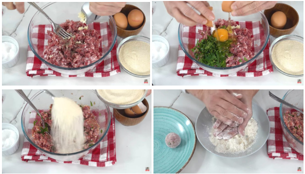
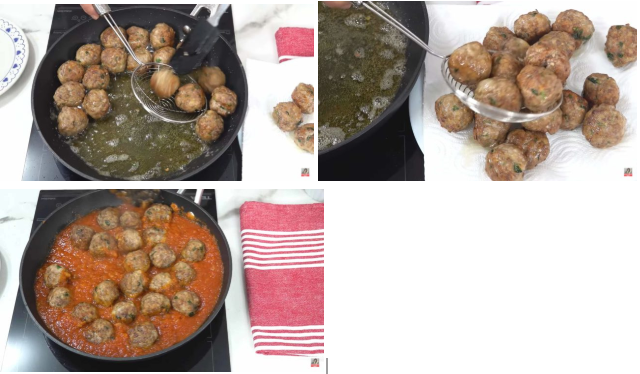
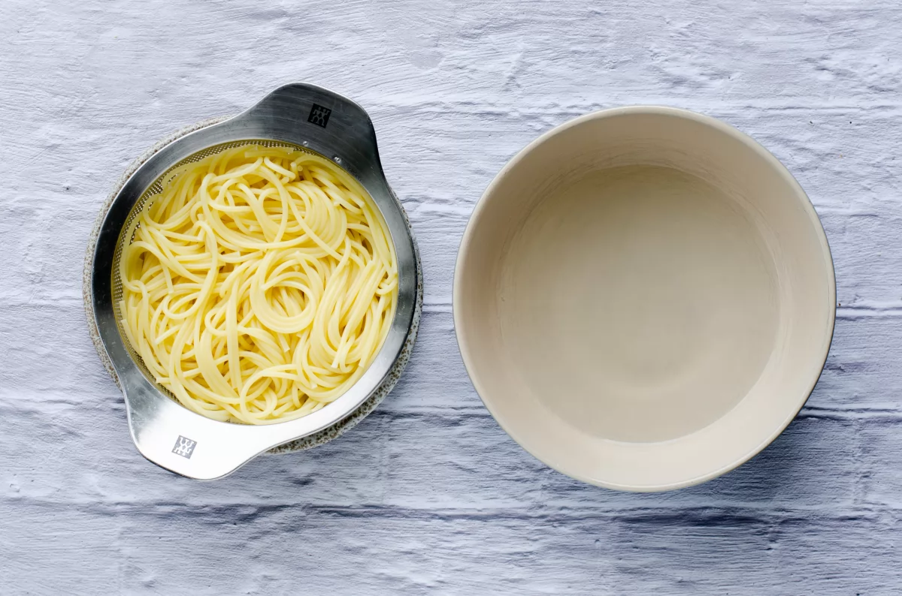
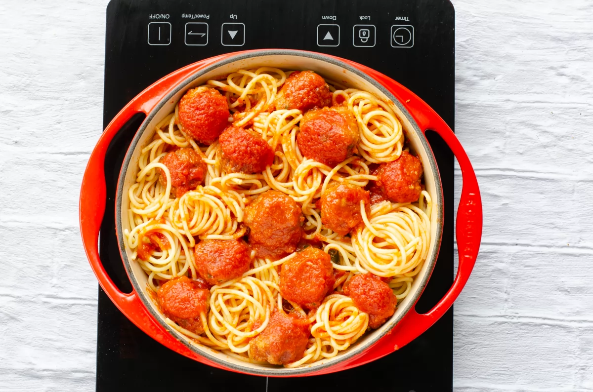

1. Para las albondigas
- En un bol agrega la carne picada, el huevo, el ajo, el perejil, sal y pimienta al gusto.
- Mezcla bien hasta que todos los ingredientes estén bien integrados.
- Agrega el pan rayado con la masa, dandole forma pequeñas bolitas de albóndiga.
- En una sartén grande, calienta aceite de oliva y fríe las albóndigas hasta que estén doradas por fuera.

2. Para la salsa de tomate
- En la misma sartén donde freíste las albóndigas, añade un poco más de aceite de oliva y sofríe la cebolla y el ajo picados hasta que estén dorados.
- Añade el tomate triturado, la hoja de laurel, el azúcar (si usas), sal y pimienta al gusto.
- ocina a fuego medio-bajo durante unos 10-15 minutos, removiendo de vez en cuando.

3. Cocinar las albondigas
- Añade las albóndigas a la salsa y deja que se cocinen a fuego lento durante unos 20-25 minutos.
La salsa debe espesar y las albóndigas se cocinarán completamente en el proceso.

3. Para los espaguetis
- Hervir agua: En una olla grande, hierve agua con sal.
- Cocinar los espaguetis: Añade los espaguetis y cocínalos según las indicaciones del paquete (generalmente 8-12 minutos).
- Escurrir: Una vez cocidos, escurre los espaguetis.
- Servir: Sirve los espaguetis y agrégales tu salsa favorita.

Servir
Sirve las albóndigas con la salsa de tomate por encima.
Puedes acompañarlas con arroz, puré de patatas o pan para aprovechar bien la salsa.

Aqui podras encontrar un video que te puede ayudar para la preparación de la receta.
Ayuda video receta